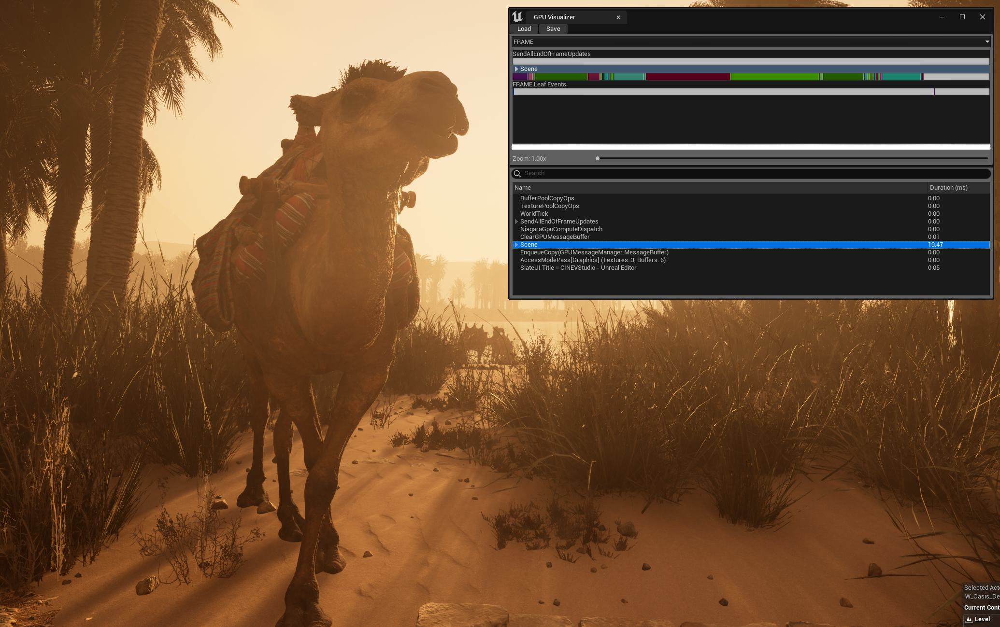
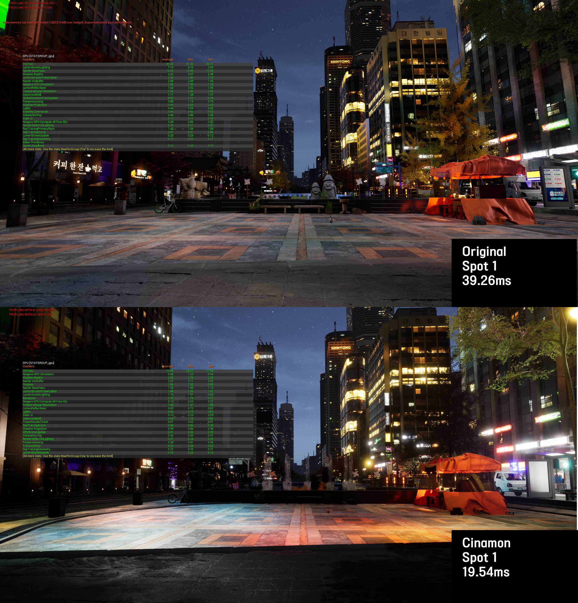
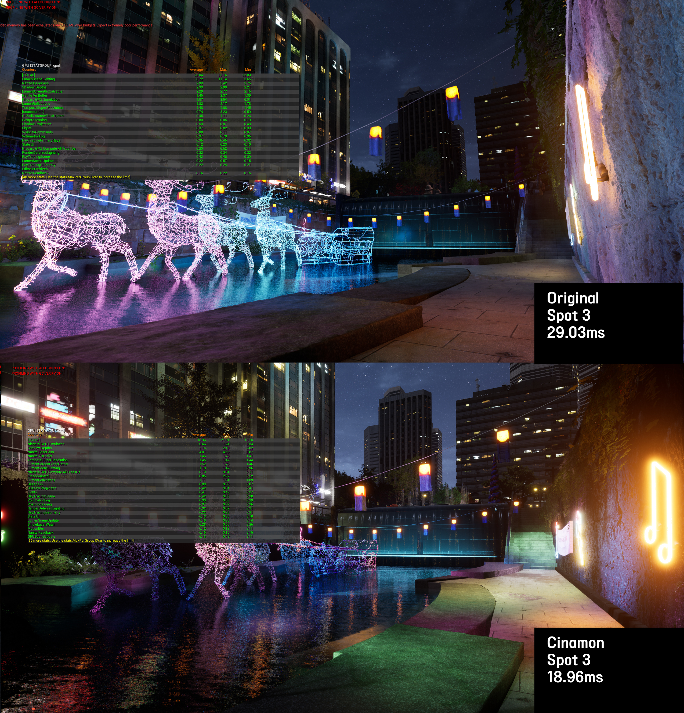
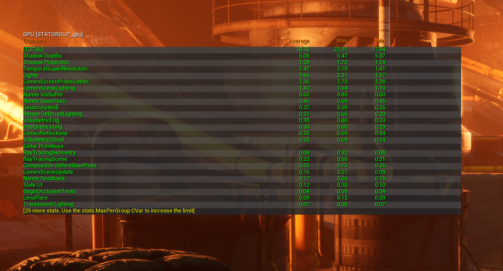
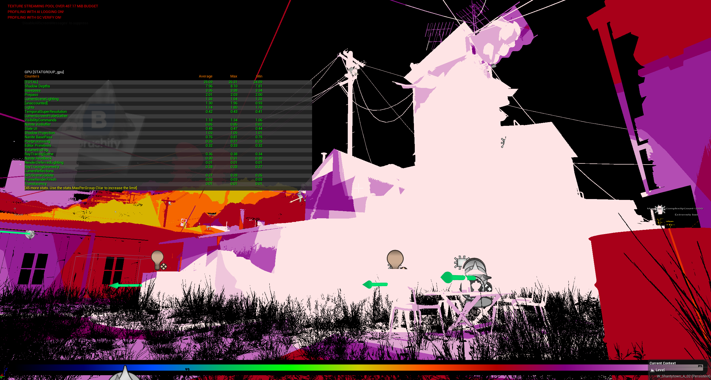
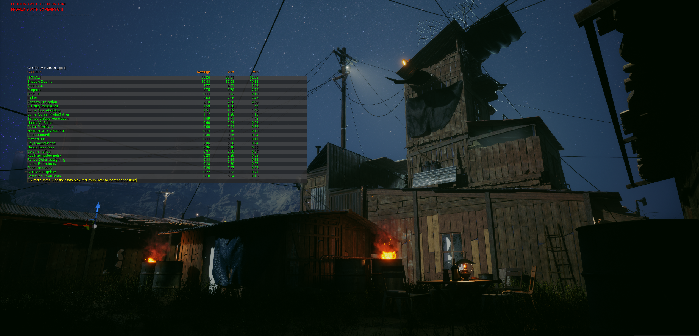
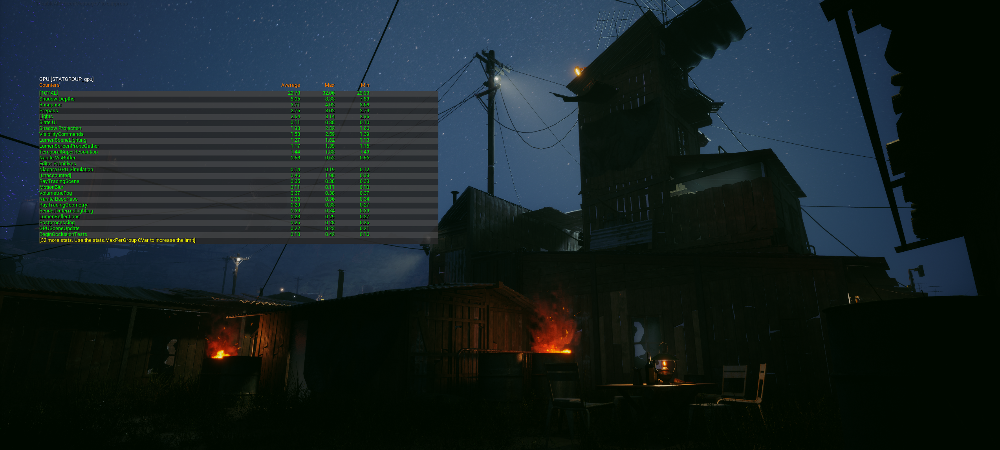
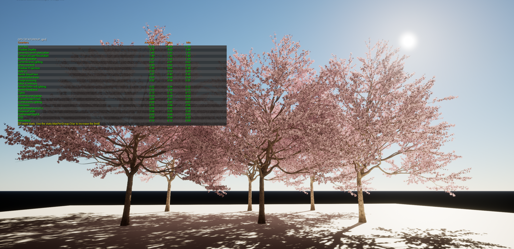
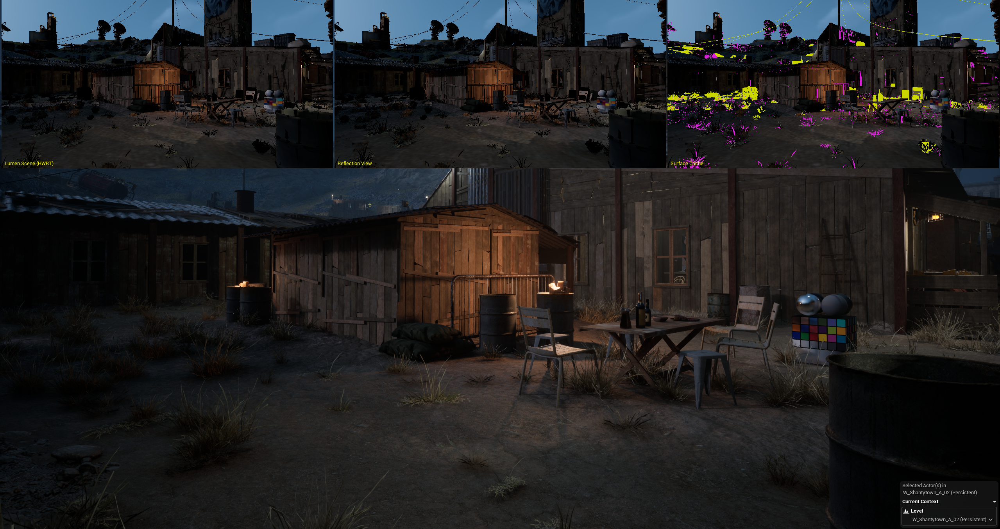

UE5 Profiling & Optimization
34–68% GPU frame time reduction across multiple production scenes through systematic diagnosis and iterative optimization
Production · UE5 · Nanite · GPU Profiling · stat gpu
Problem
Multiple production environments — city streets, industrial complexes, vegetation areas, desert scenes — were running at 29–56ms, well above the 16–20ms target. Each artist checked performance differently, and after adopting Nanite, existing optimization baselines no longer applied. The team repeatedly found themselves saying "it's slow, but we don't know where."
Solution
I standardized a 5-step GPU profiling process and shared it with the team. Then I profiled and optimized multiple production maps myself — applying Nanite mesh splitting, material replacement, and project-specific rendering settings derived from analyzing Epic's City Sample. Frame times were reduced by 34–68% while maintaining visual parity.
My Role
- Personally profiled, diagnosed, and optimized initial scenes to establish methodology and baseline targets
- Analyzed Epic's City Sample, derived Nanite setting guidelines, and documented them so other TAs and environment/lighting artists could apply them independently
- Created the 5-step methodology adopted as team standard — subsequent optimization passes were carried out by other artists using this framework
Result
| Environment | Technique | Before | After | Gain |
|---|---|---|---|---|
| City Night (4 spots) | Nanite + global render | 29–40ms | 16–19ms | 35–52%↓ |
| Industrial Complex | Mesh split (Nanite) | 56ms | 18ms | 68%↓ |
| Slum Area (2 passes) | Step-by-step | 36ms | 19ms | 47%↓ |
| Cherry Blossom | Custom material | 12.23ms | 8.09ms | 34%↓ |
Case Studies
City Night — Global Rendering + Nanite Settings
35–52% reduction across 4 spots
Background meshes consumed full triangle budgets despite occupying less than 5% of screen space. I applied project-specific Nanite settings and global rendering values — derived from analyzing Epic's City Sample — to eliminate unnecessary computation on sub-pixel geometry. Verified consistent 35–52% GPU reduction across 4 measurement spots.

Spot 1: 39.26ms → 19.54ms (50%↓) — identical camera angle, stat gpu overlay

Spot 3: 29.03ms → 18.96ms (35%↓) — neon deer sculpture by stream bridge
Industrial Complex — Nanite Mesh Split
68% reduction
A single monolithic mesh prevented Nanite from culling occluded sections, resulting in 56ms frame time. I split the model along natural occlusion boundaries, enabling per-piece culling and proper LOD transitions.

56ms → 18ms (68%↓) — Nanite culling restored after mesh split
Slum Area — Two-Pass Step-by-Step Optimization
47% reduction
stat gpu identified foliage as the top bottleneck at 9ms. Starting from 36ms, I attacked the heaviest contributor first and ran two optimization passes end-to-end — measuring after each step, rejecting ineffective attempts, and only shipping changes with verified impact. Pass 1 (foliage + lighting) brought 36→29ms. Pass 2 (Nanite, cull distance, interior lights) brought 27→19ms. Disabling a secondary directional light used for building fill could have saved another 3.5ms, but I flagged the visual quality tradeoff to the team rather than blindly applying it. This documented process then served as the reference for other artists to optimize remaining scenes independently.

Shader complexity view — white areas = extreme GPU cost, confirming foliage and lighting as primary bottlenecks

Before: 36ms

After pass 2: 19ms (47%↓)
Cherry Blossom — Material Replacement
34% reduction
External vegetation material used 14 texture samples per pixel with unnecessary subsurface scattering. I replaced it with a custom material that achieved equivalent visual quality with 6 samples. Measured a lights-off baseline (6.84ms) to isolate material cost precisely.

12.23ms → 8.09ms (34%↓) — lights-off baseline 6.84ms isolating material cost
How I Profile
I standardized this process and shared it with the team. It was adopted as the team standard for all subsequent optimization passes.
- Establish target criteria and capture fixed viewpoints
- Isolate major GPU contributors with stat gpu / GPU Visualizer
- Validate with debug modes: light overlap, shader complexity, Nanite views
- Apply lowest-risk fix while maintaining visual quality
- Re-measure on the same spot and share documented findings
Target Criteria
| Scene ms | Assessment |
|---|---|
| < 15ms | Headroom — can add more content |
| 15–18ms | Ideal range |
| > 18ms | Needs optimization |

Slum area 3-panel composite — wireframe, render, and debug views for bottleneck analysis
Validation
The desert oasis map hit the 15–20ms target across all camera positions.
Desert oasis — 15–20ms target achieved across all camera positions
All optimization decisions were made with visual parity as the constraint. The goal was not lowest possible cost, but stable performance gains with acceptable quality retention.